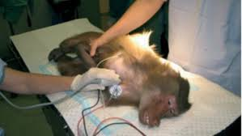
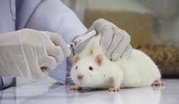
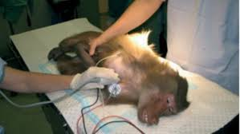
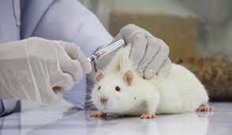
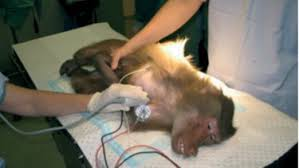
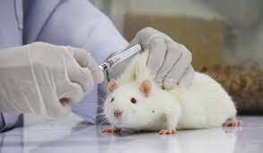

All through our history, the rulers and role models of this country have protected and nurtured the cow. King Prithu, after whom the earth is called ‘prithvi’, milked a cow, which is the embodiment of earth, to end the famine on the planet and save humanity. Lord Krishna was a Gopal, cow herder. Arjun thought it worthy to risk another 14 years of exile in order to protect the cattle in Viratnagar war. King Nahush had to reimburse the fishermen with a prize equivalent to life of Rishi Chyawan, he did so by gifting them a cow. Chola King Manu Needhi Cholan killed his son Veedhividangan to provide justice to a cow whose calf was killed under the wheels of his son's chariot.
Cow is the favourite of Lord Shiv, it is said that whatever one whispers in the ears of a bull is heard by Lord Shiv and service to cow is given the highest place in the Vedas. On the night of Shivratri (February 2012), two sadhikas on their way to Dhyan Ashram became witness to a hit and run case - the 'hit' was a three month old calf, and 'run' was an SUV driver who hit it; a pandit who was getting late for puja and a few dozen onlookers. Not one, save these two ladies, stopped to aid the calf. The calf was rushed to a reputed care centre that suggested that Nandi be taken to Hisar for orthopaedic surgery; sadly it was forced out of the hospital even before we could manage to get an appointment with the hospital.
Marg Foundation gives a permanent home in its New Delhi Shelter to more than one hundred stray and destitute animals, including handicapped, paralyzed, old, abandonned pets, who are not able to lead a stray life. Thanks to the help of many generous donors, since its inception in May, 2021, Marg Foundation has been successfully carried out the following Animal Welfare Activities
If you find an orphaned, injured or sick animal,
Call: +91-9999099423 or Email: margfoundation@info.com
To associate/partner with us please fill your details below and we will reach out to you happily!
CALL ON +91-7503064164
CALL ON +91-9311532589

